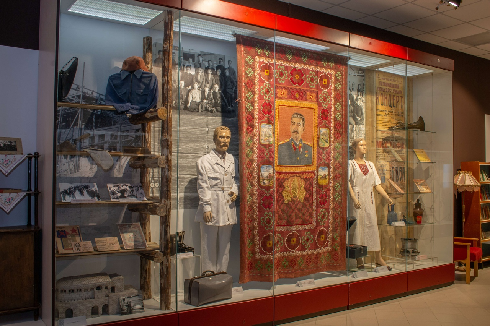
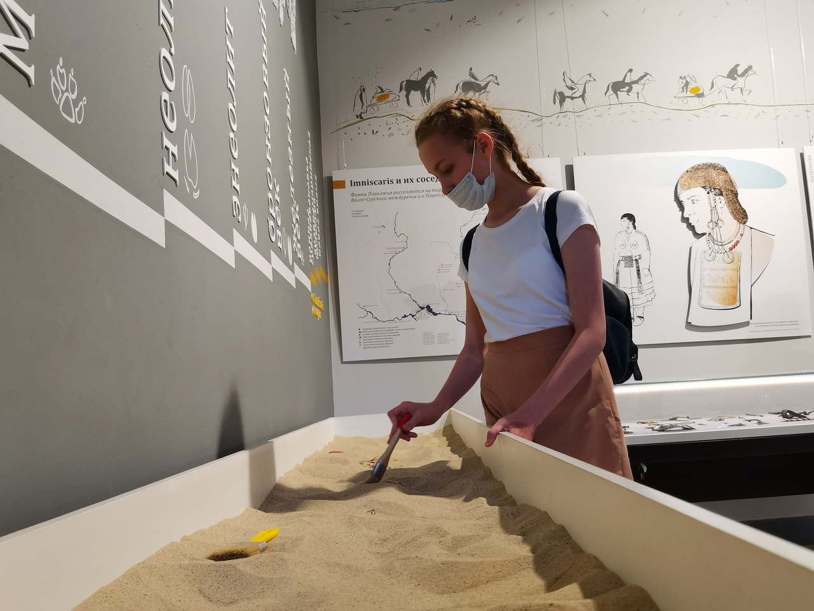
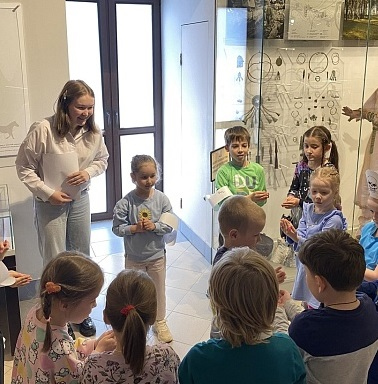
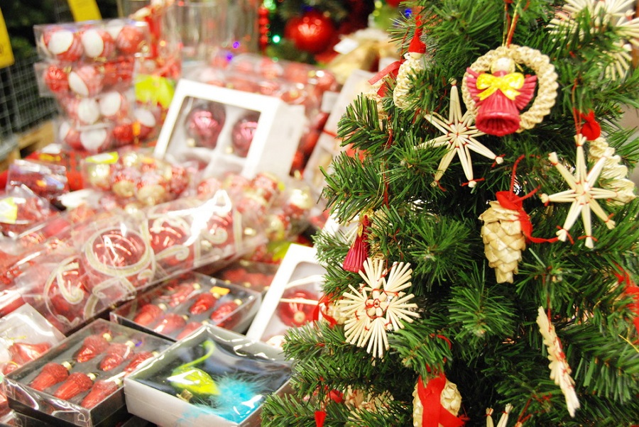
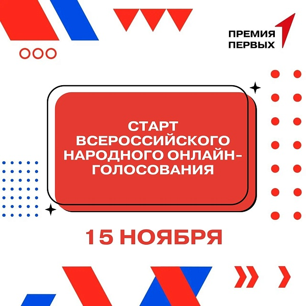

О нас
Музей истории и археологии - краеведческий музей, расположенный в городе Йошкар-Ола. Является структурным подразделением Национального музея Республики Марий Эл имени Тимофея Евсеева. 4 ноября 2018 года Музей истории и археологии начал свою работу с экспозиции "Археология Марийского Поволжья: культура, народ, государство" и "Марийский край. Вехи истории".
В 2021 году в музее была открыта экспозиция "Этноархеология: от Imniscaris до Мари". Гостей музея непременно удивят необычные инсталляции, интерьеры жилищ различных исторических периодов, уникальные предметы быта. Фотовыставка "Визит в Марий Эл" приглашает посетить природные и исторические достопримечательности республики.
Выставки музея
Все выставки-

2024 год
Марийский край. Вехи истории
Экспозиция представляет подлинные вещественные и фотодокументальные материалы по важнейшим периодам истории Марийского края.
Подробнее -

2024 год
Археология Марийского Поволжья: культура, народ, государство
Экспозиция отражает древнейшие эпохи освоения территории между Ветлужско-Вятским междуречьем и прилегающего участка побережья Волги с эпохи камня до периода вхождения в состав Русского государства.
Подробнее -

11 июня - 31 декабря 2024 года
Этноархеология: от Imniscaris до Мари
Экспозиция посвящена истории народа, в разное время известного как имнискарис, черемисы и только в начале XX века обретшего собственное название мари.
Подробнее
События
Все события-

Изменение графика работы Музея истории и археологии
02 декабря Пн - 29 декабря Вс
Уважаемые посетители, со 2 по 29 декабря 2024 года в Музее истории и археологии будет действовать следующий режим работы площадки для посетителей: Рабочие дни: среда-воскресенье с 10:00 до…
ПодробнееМузей истории и археологии
-

Приглашаем вас на предновогоднюю благотворительную ярмарку
12 ноября Вт - 15 декабря Вс
Фонд «Инициатива Про» проведёт предновогоднюю благотворительную ярмарку. Все вырученные средства будут переданы фонду им. Ани Чижовой в Республике Марий Эл, который помогает неизлечимо…
ПодробнееМузей истории и археологии
-

Поддержите музей в голосовании!
15 ноября Пт - 30 декабря Пн
В рамках Всероссийского конкурса «Премия Первых» 15 ноября стартовало народное онлайн-голосование. Оно продлится до 30 декабря включительно. Национальный музей Марий Эл им. Т.…
Подробнее